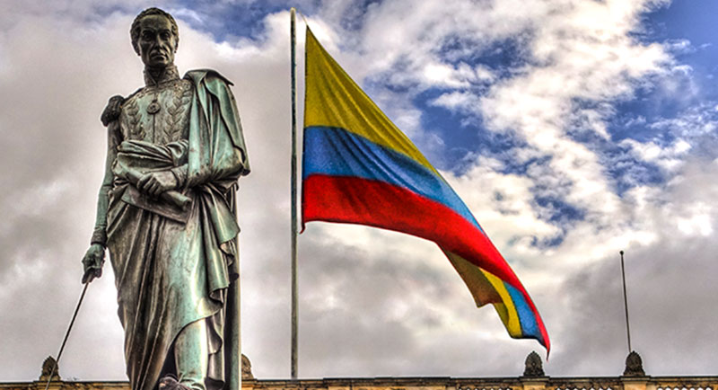

Bienvenidos a este sitio web donde conoceran un poco mas de cerca como a comienzos de los años 80 colombia atravesó un período en el que se desbordaron las problemáticas incubadas en la primera mitad del siglo XX: aumento desmedido de la población, crecimiento del índice de desempleo, ampliación del cinturón de pobreza, debilidad institucional y corrupción, auge del narcotráfico.
Es importante hacer una breve introducion y invitarlos a ver los siguientes videos donde se habla sobre como ha sido la historia de colombia:
Colombia se conforma como estado en 1810 a partir del Virreinato de la Nueva Granada, colonia del Imperio español que había sido fundada en 1550. En 1886 toma definitivamente su nombre actual de República de Colombia.
